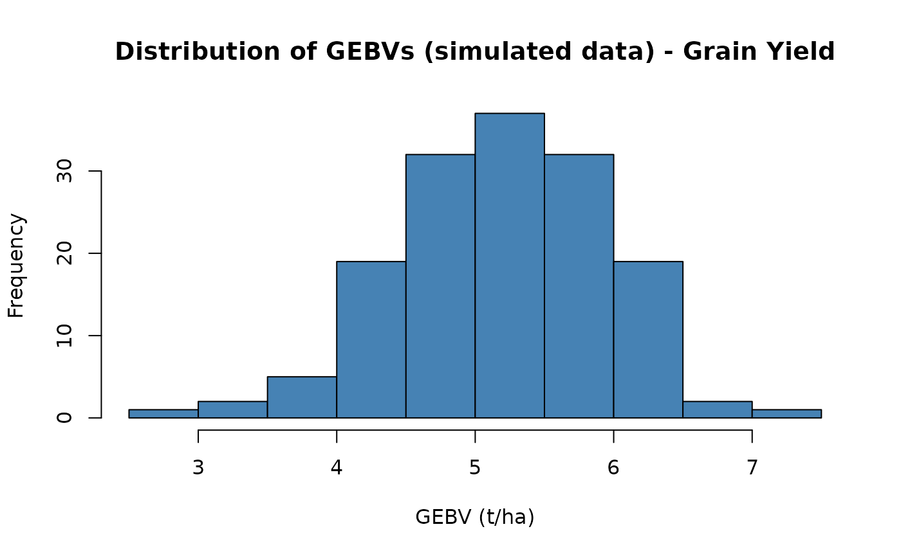

Genomic Selection Pipeline with brapiR2
Source:vignettes/articles/genomic-selection-pipeline.Rmd
genomic-selection-pipeline.RmdOverview
This article demonstrates a complete genomic selection (GS) workflow using brapiR2 to pull phenotypic and genotypic data from a BrAPI-compliant server into R, then running GS models with rrBLUP, BGLR, sommer, and AGHmatrix.
The brapi_get_dosage_matrix() function returns a
standard numeric matrix (samples x markers) that is directly compatible
with the major GS packages:
| Package | Usage |
|---|---|
| rrBLUP | mixed.solve(y, Z = dosage) |
| BGLR | ETA = list(MRK = list(X = dosage, model = "BRR")) |
| sommer | mmer(yield ~ 1, random = ~ vsr(germplasmName, Gu = A)) |
| AGHmatrix | Gmatrix(dosage, method = "VanRaden") |
It has three parts: Part 1 fetches real data from the public BrAPI test server and shows exactly what brapiR2 returns. Part 2 shows the authenticated pattern you’d use against your own server, without running it. Part 3 runs the actual GS modelling on a simulated dataset, because (as Part 1 demonstrates directly) the public server doesn’t have enough real individuals with both phenotype and genotype data to fit and validate a model.
Part 1: Live Data from the Public Test Server
These calls run against https://test-server.brapi.org
and require no authentication.
library(brapiR2)
library(dplyr)
#>
#> Attaching package: 'dplyr'
#> The following objects are masked from 'package:stats':
#>
#> filter, lag
#> The following objects are masked from 'package:base':
#>
#> intersect, setdiff, setequal, union
studies <- brapi_studies(con)
studies
#> # A tibble: 3 × 29
#> additionalInfo externalReferences active commonCropName contacts
#> <list> <list> <lgl> <chr> <list>
#> 1 <named list [1]> <list [1]> TRUE Tomatillo <list [1]>
#> 2 <named list [1]> <list [1]> TRUE Tomatillo <list [1]>
#> 3 <named list [1]> <list [1]> TRUE Tomatillo <list [1]>
#> # ℹ 24 more variables: culturalPractices <chr>, dataLinks <list>,
#> # documentationURL <chr>, endDate <chr>, environmentParameters <list>,
#> # experimentalDesign <list>, growthFacility <list>, lastUpdate <list>,
#> # license <chr>, locationDbId <chr>, locationName <chr>,
#> # observationLevels <list>, observationUnitsDescription <chr>,
#> # seasons <list>, startDate <chr>, studyCode <chr>, studyDescription <chr>,
#> # studyName <chr>, studyPUI <chr>, studyType <chr>, trialDbId <chr>, …
# brapi_study_data() falls back to fetching all observations and filtering
# client-side when a server (like this one) doesn't honour the studyDbId
# filter on /observations - so it succeeds even though a direct
# brapi_observations(con, studyDbId = ...) call would come back empty.
pheno_by_study <- lapply(studies$studyDbId, brapi_study_data, con = con)
#> ! No observations found for study "study2".
#> ! No observations found for study "study3".
names(pheno_by_study) <- studies$studyDbId
pheno_by_study[["study1"]]
#> # A tibble: 2 × 6
#> observationUnitDbId observationUnitName germplasmDbId germplasmName studyDbId
#> <chr> <chr> <chr> <chr> <chr>
#> 1 observation_unit1 Plot 1 germplasm1 Tomatillo Fan… study1
#> 2 observation_unit2 Plot 2 germplasm2 Tomatillo Fan… study1
#> # ℹ 1 more variable: `Corn Stalk Height` <list>
vsets <- brapi_variant_sets(con)
vsets
#> # A tibble: 1 × 11
#> additionalInfo externalReferences analysis availableFormats callSetCount
#> <list> <list> <list> <list> <int>
#> 1 <named list [1]> <list [1]> <list [1]> <list [3]> 13
#> # ℹ 6 more variables: referenceSetDbId <chr>, studyDbId <chr>,
#> # variantCount <int>, variantSetDbId <chr>, variantSetName <chr>,
#> # metadataFields <list>
vs_id <- vsets$variantSetDbId[1]
## brapi_variants()'s referenceName/start are NA on this server (the BrAPI
## spec makes them optional - they place a variant on a reference
## assembly, and this server has none configured). brapi_get_marker_map()
## instead reads the Genome Maps entity (/markerpositions), which places
## each marker on a named map (genetic, cM, or physical, bp) and is
## populated here.
markers <- brapi_get_marker_map(con, variantSetDbId = vs_id)
#> ℹ Async search started (ID: c9fcf612-1075-430b-b366-504c42364fcf). Polling...
#> Warning: 14 of 20 variants in "variantset1" have no marker position record; returning
#> positions for the remaining 6.
markers
#> # A tibble: 6 × 8
#> variantDbId variantName mapDbId mapName type unit linkageGroupName position
#> <chr> <chr> <chr> <chr> <chr> <chr> <chr> <int>
#> 1 variant01 M1 genome_… Primar… Phys… cM Chromosome 1 200
#> 2 variant02 M2 genome_… Primar… Phys… cM Chromosome 1 4000
#> 3 variant03 M3 genome_… Primar… Phys… cM Chromosome 1 60000
#> 4 variant04 M4 genome_… Primar… Phys… cM Chromosome 2 200
#> 5 variant05 M5 genome_… Primar… Phys… cM Chromosome 2 4000
#> 6 variant06 M6 genome_… Primar… Phys… cM Chromosome 2 60000
dosage <- brapi_get_dosage_matrix(con, vs_id)
#> ℹ Fetching allele matrix for variant set "variantset1"...
#> ℹ Encoding 260 genotype calls as allele dosages...
#> ✔ Dosage matrix ready: 13 samples x 20 markers.
dim(dosage)
#> [1] 13 20
dosage[seq_len(min(5, nrow(dosage))), seq_len(min(6, ncol(dosage)))]
#> variant01 variant02 variant03 variant04 variant05 variant06
#> callset01 0 0 0 0 0 1
#> callset02 1 0 NA NA NA NA
#> callset03 1 0 1 1 0 0
#> callset04 1 0 1 1 0 1
#> callset05 1 0 NA 1 0 0Do phenotype and genotype records share any germplasm here?
This is the question that decides whether real genomic prediction is
possible against this server. brapi_call_sets() links a
genotyped sample to a sampleDbId, and
brapi_samples() links that same sampleDbId to
a germplasmDbId - joining on sampleDbId (not
callSetDbId; they’re different ID spaces on this
server).
pheno_germplasm <- unique(unlist(lapply(pheno_by_study, function(d) {
if (nrow(d) > 0 && "germplasmDbId" %in% names(d)) {
d$germplasmDbId
} else {
character(0)
}
})))
pheno_germplasm
#> [1] "germplasm1" "germplasm2"
call_sets <- brapi_call_sets(con, variantSetDbId = vs_id)
samples <- brapi_samples(con)
geno_germplasm <- samples |>
filter(.data$sampleDbId %in% call_sets$sampleDbId) |>
pull(.data$germplasmDbId) |>
unique()
geno_germplasm
#> [1] "germplasm2" "germplasm1" "germplasm3"
overlap <- intersect(pheno_germplasm, geno_germplasm)
overlap
#> [1] "germplasm1" "germplasm2"Real, live result: 2 germplasm have both phenotype and genotype
records on this server today. That is genuinely more than zero, but far
short of the dozens of individuals a real genomic prediction exercise
needs to fit a model and hold out a validation set. See dev/explore-test-server.R
for the full survey this is drawn from. Part 3 below uses simulated data
so the modelling section can actually run.
Part 2: Authenticated Access to Your Own Server (illustrative)
Production BrAPI servers (Breedbase, BMS, Germinate, …) require credentials the public test server doesn’t need. This shows the pattern — it is not run here, since it needs a real server and login of your own.
con_priv <- brapi_connection("https://my-breedbase.org")
con_priv <- brapi_login(con_priv, "username", "password")
# Optional: enable caching so re-runs don't hit the server again
con_priv <- brapi_cache_enable(con_priv, ttl = 7200)
# Get phenotype data in wide format (one row per plot, one column per trait)
pheno_raw <- brapi_study_data(con_priv, "my_study_id")
pheno_raw
# Convert trait columns to numeric and drop missing
pheno <- pheno_raw |>
mutate(across(Grain_Yield_t_ha:Thousand_Grain_Weight, as.numeric)) |>
filter(!is.na(Grain_Yield_t_ha))
# List available variant sets to find the right genotyping dataset
vsets_priv <- brapi_variant_sets(con_priv)
vsets_priv
# Get dosage matrix: rows = samples (callSetDbIds),
# cols = markers (variantDbIds). Values: 0 (hom ref), 1 (het), 2 (hom alt),
# NA (missing)
dosage_priv <- brapi_get_dosage_matrix(con_priv, "vs001")
dim(dosage_priv)
# Get marker map for downstream QTL / Manhattan plots
markers_priv <- brapi_get_marker_map(con_priv, variantSetDbId = "vs001")
markers_privPart 3: Genomic Selection on Simulated Data
Genomic prediction needs the same germplasm scored on both sides — enough of them to fit marker effects and validate the fit. Part 1 showed real brapiR2 output; it also showed why the public server can’t support the model-fitting step: only 2 real germplasm have paired data there, and no public BrAPI server currently provides the dozens-to-hundreds of paired records genomic prediction actually needs. The rest of this article uses a simulated dataset built with AlphaSimR, generated with a fixed seed so it is fully reproducible without server access. Simulated values are labelled as such throughout.
# SIMULATED founder haplotypes. runMacs() runs a coalescent simulation
# (MaCS; Chen, Marjoram & Wall 2009) that produces markers with realistic
# linkage disequilibrium (LD) and shared ancestry between founders - unlike
# the independent per-marker draws used in earlier drafts of this article.
#
# Not run here: AlphaSimR does not expose R-level seed control for this
# coalescent step (set.seed() has no effect on runMacs() itself - verified,
# two runs with the same seed produce different founder haplotypes), so
# calling it at build time would make every number below change on every
# rebuild of this article. Instead, this call was run once, and its result
# saved to founderPop.rds (loaded below) so the article - including the
# reported cross-validation accuracy - is exactly reproducible.
library(AlphaSimR)
n_founders <- 150L # founder lines
n_sites <- 800L # segregating sites simulated per chromosome
founderPop <- runMacs(
nInd = n_founders, nChr = 1L, segSites = n_sites,
species = "GENERIC", nThreads = 1L
)
saveRDS(founderPop, "founderPop.rds")
library(dplyr)
library(AlphaSimR)
#>
#> Attaching package: 'AlphaSimR'
#> The following object is masked from 'package:dplyr':
#>
#> mutate
n_founders <- 150L # founder lines (must match the frozen founderPop.rds)
n_qtl <- 100L # of the founder genome's segregating sites, how many are QTL
n_snps <- 700L # SNP chip size: the remaining sites, QTL excluded
h2 <- 0.5 # target narrow-sense heritability
# Load the frozen founder population (see the eval = FALSE chunk above for
# how it was made) instead of calling runMacs() here, so this article's
# genotypes - and the cross-validation accuracy reported at the end of this
# section - are exactly reproducible across rebuilds. Every step *after*
# this one (trait assignment, crossing, cross-validation folds) was already
# fully reproducible given the founder population it starts from; freezing
# the founders makes the whole pipeline reproducible end to end.
founderPop <- readRDS("founderPop.rds")
set.seed(42)
# SimParam defines the trait architecture on top of the founder genome:
# n_qtl randomly chosen segregating sites carry additive effects drawn to
# hit the target heritability; the remaining sites are neutral markers
# only informative through their LD with the causal ones. That's now a
# fact about the genome, not yet about what the model sees - the SNP chip
# defined next is drawn separately, only from those neutral sites, so it
# deliberately excludes the QTL themselves.
SP <- SimParam$new(founderPop)
SP$addTraitA(nQtlPerChr = n_qtl, mean = 5, var = 1) # SIMULATED yield (t/ha)
SP$setVarE(h2 = h2)
# A SNP chip is a genotyping platform's fixed marker panel, decided before
# anyone knows which sites are causal. addSnpChip() models that: it draws
# its n_snps markers only from the segregating sites addTraitA() did NOT
# designate as QTL, so every marker on the chip tags the causal variants
# only through LD, never by being one.
SP$addSnpChip(nSnpPerChr = n_snps)
founders <- newPop(founderPop, simParam = SP)
# One round of random crossing: each of n_founders progeny descends from
# two randomly chosen founders. Unlike independent markers, the resulting
# population has real family relatedness and real recombination
# breakpoints between founder haplotypes.
progeny <- randCross(
founders, nCrosses = n_founders, nProgeny = 1L, simParam = SP
)
# pullSnpGeno() returns the dosage matrix for the SNP chip only, not the
# QTL: rows = individuals, columns = chip markers, values = 0/1/2 copies
# of the alternate allele - the same shape brapi_get_dosage_matrix()
# returns in Part 1. This is the deliberate difference from
# pullSegSiteGeno(), used in earlier drafts of this article: a real
# marker panel never includes the causal variants themselves, so a
# simulation that hands the model the true QTL directly would overstate
# how well genomic prediction works on a real genotyping platform.
geno_aligned <- pullSnpGeno(progeny, simParam = SP)
pheno_aligned <- tibble(
germplasmName = progeny@id,
Grain_Yield_t_ha = pheno(progeny)[, 1] # SIMULATED yield (t/ha)
)
cat(sprintf(
"Simulated %d lines x %d SNP-chip markers, %d QTL (not on the chip), target h2 = %.2f\n",
nrow(geno_aligned), ncol(geno_aligned), n_qtl, h2
))
#> Simulated 150 lines x 700 SNP-chip markers, 100 QTL (not on the chip), target h2 = 0.50As a sanity check, adjacent SNP-chip markers should be far more correlated with each other than distant ones - that’s LD, and it’s what genomic prediction exploits when the causal variants themselves aren’t observed. The independent-marker simulation in earlier drafts of this article had no such structure by construction.
r2_adjacent <- vapply(seq_len(ncol(geno_aligned) - 1), function(j) {
suppressWarnings(cor(geno_aligned[, j], geno_aligned[, j + 1])^2)
}, numeric(1))
set.seed(45)
r2_random <- vapply(seq_len(200), function(i) {
j <- sample.int(ncol(geno_aligned), 1)
j2 <- sample(setdiff(seq_len(ncol(geno_aligned)), j), 1)
suppressWarnings(cor(geno_aligned[, j], geno_aligned[, j2])^2)
}, numeric(1))
cat(sprintf(
"Mean r^2, adjacent markers: %.3f | random marker pairs: %.3f\n",
mean(r2_adjacent, na.rm = TRUE), mean(r2_random, na.rm = TRUE)
))
#> Mean r^2, adjacent markers: 0.422 | random marker pairs: 0.023
# Introduce a small amount of missing genotype data, as real platforms do.
set.seed(43)
n_missing <- floor(0.03 * length(geno_aligned))
missing_idx <- sample.int(length(geno_aligned), n_missing)
geno_aligned[missing_idx] <- NA
mean(is.na(geno_aligned))
#> [1] 0.03Imputation
Missing calls have to go somewhere before modelling, because the
methods below are matrix operations with no notion of a missing cell.
mixed.solve() will not accept NA in its design
matrix, and dropping every individual with any missing call would
discard most of a real panel, since missingness is scattered rather than
concentrated.
The usual first step is not imputation at all but filtering: markers missing in more than roughly 10 to 20 percent of individuals, and individuals missing more than roughly 20 to 30 percent of their calls, are typically removed rather than reconstructed, because there is too little information left to reconstruct them from. What remains is imputed. Below about 5 percent residual missingness, which is where this simulation sits, the choice of method makes very little difference to prediction accuracy.
Mean imputation, used here, replaces a missing call with the marker’s
mean dosage across individuals. It is unbiased for allele frequency and
costs nothing, but it pulls imputed individuals toward the population
mean and so slightly shrinks genetic variance. Rounding to whole
numbers, which we do here because AGHmatrix::Gmatrix()
expects integer calls, discards the fractional information mean
imputation supplies and is a further small compromise. The alternative
shown in the comment, rrBLUP::A.mat(), handles missingness
while computing the relationship matrix and so avoids modifying the
genotype matrix at all. Where imputation genuinely matters, with high
missingness or low marker density, a haplotype-based imputer such as
Beagle that borrows information from linked markers and shared
haplotypes will beat both, at the cost of an external tool and a
reference panel.
# Simple mean imputation (column means), rounded back to whole-number
# dosages since AGHmatrix::Gmatrix() expects integer genotype calls.
col_means <- round(colMeans(geno_aligned, na.rm = TRUE))
for (j in seq_len(ncol(geno_aligned))) {
geno_aligned[is.na(geno_aligned[, j]), j] <- col_means[j]
}
anyNA(geno_aligned)
#> [1] FALSE
# Or use rrBLUP's A.mat, which handles missing data internally.Run Genomic Selection with rrBLUP
mixed.solve() fits y = mu + Zu + e, where
Z is the dosage matrix and u is a vector of
marker effects treated as random draws from a common normal
distribution. That last assumption is the substantive one: it says every
marker contributes a small effect drawn from the same distribution,
which is the infinitesimal model. Its practical consequence is that all
effects are shrunk toward zero by an amount the model estimates from the
data, so with far more markers than individuals the fit stays well
behaved instead of chasing noise.
The function returns result$u, one estimated effect per
marker, and result$beta, the intercept. A genomic estimated
breeding value is then just the sum of an individual’s marker effects
weighted by its allele dosages, which is the matrix product computed
below. GEBVs come out in trait units, tonnes per hectare here, and
represent predicted genetic merit rather than expected phenotype: they
carry the heritable component only, which is exactly what you want when
ranking candidates for selection. This ridge formulation is
mathematically equivalent to GBLUP fitted through a genomic relationship
matrix; the two differ in computation, not in the model.
library(rrBLUP)
# Mixed model: phenotype ~ overall mean + random marker effects
result <- mixed.solve(
y = pheno_aligned$Grain_Yield_t_ha,
Z = geno_aligned
)
# Estimated marker effects
length(result$u)
#> [1] 700
# GEBVs (Genomic Estimated Breeding Values)
# mixed.solve() returns u/beta as 1-D arrays; as.vector() drops the dim
# attribute so %*% treats them as plain vectors.
gebvs <- geno_aligned %*% as.vector(result$u) + as.vector(result$beta)
head(gebvs)
#> [,1]
#> 151 4.832812
#> 152 4.566174
#> 153 5.481564
#> 154 3.769689
#> 155 5.531879
#> 156 5.322381
hist(gebvs,
main = "Distribution of GEBVs (simulated data) - Grain Yield",
xlab = "GEBV (t/ha)", col = "steelblue"
)
Alternative GS Packages
The four packages solve different problems, and the choice usually follows from what you believe about the trait rather than from performance.
rrBLUP assumes many markers of small effect. For a polygenic trait such as maize grain yield that assumption is close enough to true that rrBLUP is hard to beat, and it is the fastest of the four.
BGLR lets you change that assumption. Its
BRR model is the Bayesian equivalent of what rrBLUP fits,
but BayesB and BayesC place variable selection
priors on marker effects, allowing a few markers to carry large effects
while most carry none. For a trait with known major genes, such as
resistance conferred by a single locus, those priors can outperform
ridge substantially. For yield they usually do not. BGLR also accepts
multiple terms in its ETA list, so you can fit markers
alongside pedigree or environmental covariates in one model.
sommer is the choice when the model needs more than
one random effect. Multi-trait analysis, explicit genotype by
environment terms, and custom covariance structures all belong here, and
it accepts a relationship matrix through Gu rather than a
raw marker matrix.
AGHmatrix is not a fitting engine. It builds relationship matrices, genomic from markers, pedigree-based from a known pedigree, or the combined H matrix when only some individuals are genotyped, and hands them to something else. Its polyploid-aware methods matter for crops such as potato and sugarcane where the diploid assumptions elsewhere in this article do not hold.
The code below is shown rather than run: it fits the same trait three ways, and the comparison above is the useful part.
# ---- BGLR (Bayesian regression) ----
library(BGLR)
bglr_dir <- tempfile("bglr_")
dir.create(bglr_dir)
fm_bglr <- BGLR(
y = pheno_aligned$Grain_Yield_t_ha,
ETA = list(MRK = list(X = geno_aligned, model = "BRR")),
nIter = 1200, burnIn = 200,
saveAt = file.path(bglr_dir, "bglr_"),
verbose = FALSE
)
gebvs_bglr <- geno_aligned %*% fm_bglr$ETA$MRK$b
head(gebvs_bglr)
# ---- sommer (mixed model with G matrix) ----
library(sommer)
library(AGHmatrix)
# Build genomic relationship matrix
G <- Gmatrix(geno_aligned, method = "VanRaden")
fm_sommer <- mmer(
Grain_Yield_t_ha ~ 1,
random = ~ vsr(germplasmName, Gu = G),
rcov = ~units,
data = pheno_aligned,
verbose = FALSE
)
gebvs_sommer <- randef(fm_sommer)$`u:germplasmName`
head(gebvs_sommer)Cross-Validation
Fitting the model to all the data and correlating its fitted values with the observed phenotypes would tell you almost nothing. The marker effects were estimated from those very phenotypes, so the correlation reflects how well the model can reproduce data it has already seen. With more markers than individuals, which is the normal situation in genomic selection, that correlation can approach one while the model predicts new individuals no better than chance.
The question that matters for breeding is different: how well does the model rank candidates it has never been phenotyped on, since the entire point is to select before phenotyping. Cross-validation answers that directly. The individuals are split into five folds, the model is refitted five times holding out one fold each time, and accuracy is the correlation between predicted and observed values in the held-out fold. Reporting the standard deviation across folds matters too, since a mean accuracy resting on wildly variable folds is not a stable estimate.
Two things help interpret the number. Prediction accuracy is bounded
above by the square root of heritability, because the phenotype you are
validating against is itself an imperfect measure of genetic merit. With
h2 set to 0.5 here the ceiling is about 0.71, so the
accuracy reported below is a substantial fraction of what is
theoretically attainable. And random fold assignment implicitly assumes
the individuals you want to predict are related to the ones you trained
on, which is true within a breeding population but optimistic if the
real question is predicting a new family or an unrelated germplasm
source. Where that is the question, splitting by family rather than at
random gives a more honest and considerably lower estimate.
set.seed(44)
n <- nrow(pheno_aligned)
folds <- sample(rep(1:5, length.out = n))
cors <- numeric(5)
for (k in 1:5) {
train <- folds != k
test <- folds == k
fit <- mixed.solve(
y = pheno_aligned$Grain_Yield_t_ha[train],
Z = geno_aligned[train, ]
)
pred <- geno_aligned[test, ] %*% as.vector(fit$u) + as.vector(fit$beta)
cors[k] <- cor(as.numeric(pred), pheno_aligned$Grain_Yield_t_ha[test])
}
cat(sprintf(
"5-fold CV prediction accuracy (simulated data): %.3f +/- %.3f\n",
mean(cors), sd(cors)
))
#> 5-fold CV prediction accuracy (simulated data): 0.521 +/- 0.168Prediction accuracy on simulated data is not a stand-in for accuracy on any particular real breeding program. Its purpose here is only to demonstrate that the pipeline (fetch -> align -> impute -> model -> validate) runs end to end.
A note on realism
This simulation is more realistic than the independent-marker version used in earlier drafts of this article, but it is still a simulation, and it is worth being precise about what it does and does not capture.
What it captures: the founder haplotypes come from a coalescent
simulation (runMacs()), so nearby markers are correlated
the way real linked markers are - the LD-decay check above shows this
directly (adjacent-marker r² well above random-pair r²). The population
also has real family structure from one round of random crossing among
the founders, and a genetic architecture where n_qtl causal
sites drive the trait but never appear on the n_snps-marker
SNP chip the model actually sees - the chip tags the causal variants
through LD rather than containing them, which is the realistic case: no
real genotyping platform hands you the true causal variant, only markers
correlated with it.
On reproducibility: runMacs()’s founder haplotypes are
not fixed by this article’s seed - AlphaSimR doesn’t
expose R-level seed control for that coalescent step, so two calls to it
produce different founders even with the same set.seed()
(see the eval = FALSE chunk above). Calling it at
build time would therefore make the cross-validation accuracy
below change on every rebuild. Instead, runMacs() was run
once and its result frozen to founderPop.rds, which this
article loads instead of regenerating - every run of this article,
including the exact cross-validation number below, is now identical.
Regenerating founderPop.rds (by running the
eval = FALSE chunk again) would shift that number to a new,
equally-arbitrary value.
What it still does not capture: a single chromosome and a single
generation of random mating is a much simpler pedigree than a real
breeding program’s history of selection, multiple founders per era, and
population structure across subpopulations or breeding cycles. The
heritability (h2) and QTL count are chosen, not estimated
from any real trait. The accuracy is realistic in magnitude for a small,
single-chromosome training population, but it describes this simulation,
not any particular real breeding program.
References
- Selby, P., Abbeloos, R., Backlund, J.E., et al., & The BrAPI Consortium (2019). BrAPI — an application programming interface for plant breeding applications. Bioinformatics, 35(20), 4147–4155. https://doi.org/10.1093/bioinformatics/btz190
- Meuwissen, T.H.E., Hayes, B.J., & Goddard, M.E. (2001). Prediction of total genetic value using genome-wide dense marker maps. Genetics, 157(4), 1819–1829. https://doi.org/10.1093/genetics/157.4.1819
- Endelman, J.B. (2011). Ridge regression and other kernels for genomic selection with R package rrBLUP. The Plant Genome, 4, 250–255.
- Pérez, P., & de los Campos, G. (2014). Genome-wide regression and prediction with the BGLR statistical package. Genetics, 198(2), 483–495.
- Covarrubias-Pazaran, G. (2016). Genome assisted prediction of quantitative traits using the R package sommer. PLoS ONE, 11, 1–15.